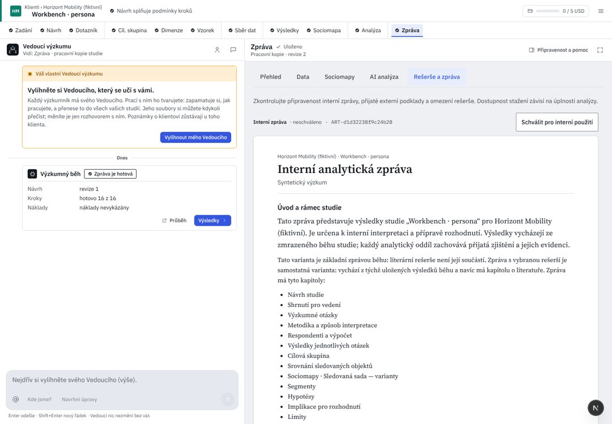

Hledat nebo spustit…⌘K
0 běží2 čekají
Zpráva
{{st.word}}Do zprávy jde jen přijaté. Přijaté 3: srovnání značek, rozdíl podle věku, omezení.
Posoudit na AnalýzeTo číslo napsal kód z běhu; změnili jste ho vy. Uložilo se, nic se neodmítá. Schválením ho přijmete, jak je.
Klientská zpráva zatím není připravená
příprava nic nestojíPřipravíte ji tlačítkem nahoře. Otevře se ve stejném editoru a schvaluje se zvlášť. Oproti interní zprávě:
Každá uložená verze projde znovu kontrolou pro klienta; co neprojde, řekne se u schválení slovy.
UX kritika · Zpráva
Zpráva je to, co odchází. Dnes se dokument vybírá na dvou místech nezávisle, schvaluje se jinde, než se stahuje, a text nejde upravit. Prototyp staví krok na skutečném editoru ONLYOFFICE Docs 9.4.0.1, který AIA hostuje (report-editor-hosting), se skutečnou interní zprávou fiktivní studie. Kód d5d36b25; R/ = apps/web/src/components/rehome/research/.
Dnes v AIA (workbench, 1440 px)

{{c.l}}{{c.t}}
- {{x.t}}{{x.a}}